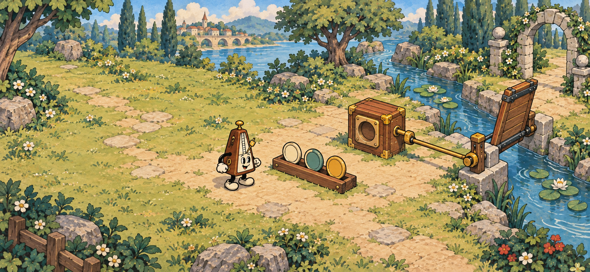
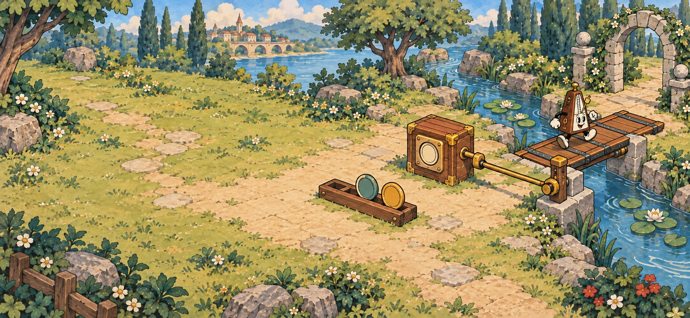

这一次，你来选择
让桥放下来
为机关找到音名 C 的材料。
选择一枚材料，再放入机关。
01 / 撤去示范，让玩家自己选择
只保留目标与求助入口，三枚材料采用相同标记样式，不高亮答案。点选后放入机关是本轮操作提案；字母匹配只占位展示布局，不是最终测试题。
机关还没有启动
换一枚，再试试
刚才选的是 D，机关需要 C。
材料还在这里，可以重新选择。
02 / 原因说清楚，保持场景与操作位置
这里展示未被接纳的材料已经回到原位后的状态，不演示搬运动画。圈出刚才尝试的 D，桥保持升起；说明原因并允许重选或回看，不增加扣分、倒计时或惩罚弹窗。

你的选择，让机关动了起来
现在，可以过去了
C 材料进入机关 → 桥放下。
刚才的选择留在场景里，伙伴也能继续向前了。
03 / 机关与角色给出结果，文字只补充因果
保留安装的材料、已打开的道路和角色行动，让结果成为世界的变化。短回顾不替代机关反馈，也不宣称玩家已经熟练掌握；本轮画稿不增加星级或大型结算页。